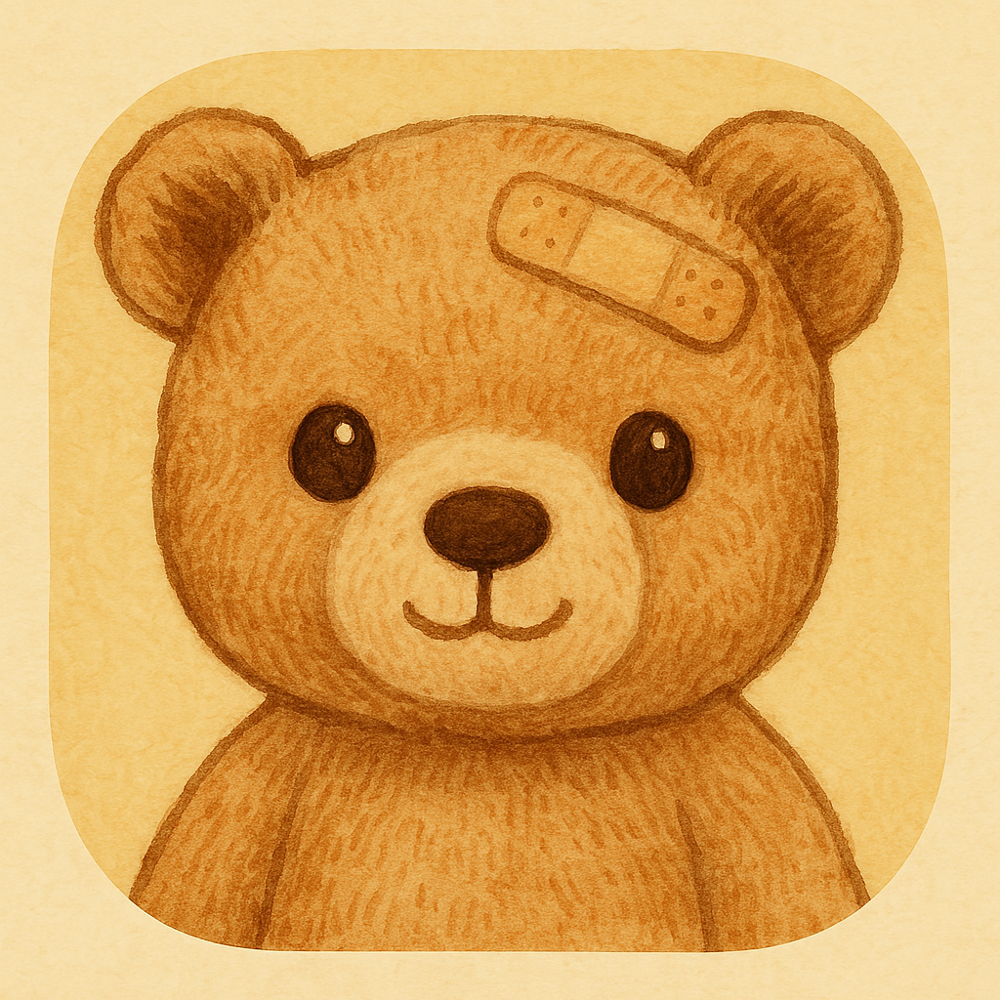

타로 · 상처를 닦아주는 일
타로는 아픈 부위에 소독약과 약을 발라주는 역할입니다. 지금의 상처를 들여다보고 어루만집니다.

Teddy Bear's Diary왜 밴드를 붙였을까요?
곰돌이 앱에서 카드는 점술이 아닙니다. 지금의 상처를 바라보고, 다정하게 돌보며, 천천히 아물도록 돕는 방식입니다.
타로는 아픈 부위에 소독약과 약을 발라주는 역할입니다. 지금의 상처를 들여다보고 어루만집니다.
상처가 덧나지 않게 지켜주는 천사 모양의 밴드입니다. 더 이상 같은 곳이 다치지 않도록 보호합니다.
추후 출시 예정타로 컵 10번의 무지개처럼, “앞으로는 더 이상 똑같이 힘들지 않을 거야.”
— 곰돌이가 건네고 싶은 마음
소독약(타로)으로 닦고, 밴드(천사 카드)로 아물게 하는 것. 이것이 곰돌이 앱이 카드를 다루는 방식이며, 머리에 밴드를 붙인 곰돌이라는 캐릭터 그 자체와 맞닿아 있습니다.
주요 기능
하루의 감정을 내 말로 풀어냅니다. 곰돌이는 반추의 흐름을 알아차리고 실천할 수 있는 작은 행동을 제안합니다.
충분한 대화가 쌓이면 그 흐름을 바탕으로 보관할 수 있는 일기를 만들어 줍니다.
타로 카드와 짧은 메시지를 통해 하루를 돌아봅니다. 천사 카드는 추후 출시될 예정입니다.
일기 길이와 모드, 언어, 알림 등 지원되는 설정을 나에게 맞게 조정할 수 있습니다.
Android 출시
Teddy Bear's Diary 1.0이 지금 Google Play에서 비공개 베타 테스트 중입니다.
1단계: 위 버튼으로 테스터 그룹 참여를 요청해 주세요 (승인은 보통 빠르게 처리돼요). 2단계: 승인되면 이 링크를 열어 테스터로 참여하고 Google Play에서 설치하세요. 가입이 어려우시면 glee98670@gmail.com으로 문의해 주세요.
정책과 계정 관리
랜딩 페이지는 가볍게 유지하고, 심사·고객지원·계정 삭제 요청에 필요한 정책은 각각 직접 연결되는 URL로 분리했습니다.
공개 전 정책의 공고일과 시행일을 확인해 주세요.